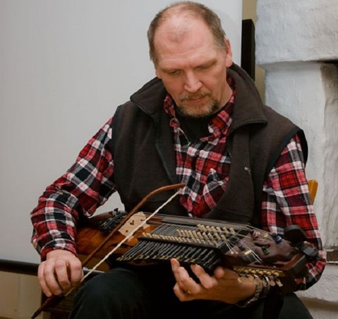
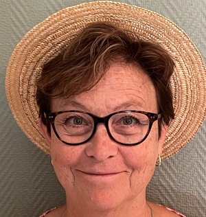
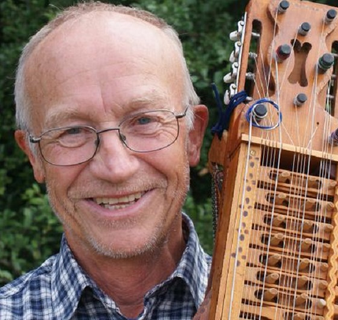
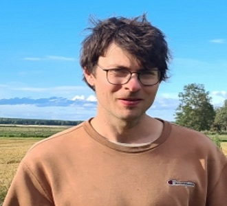
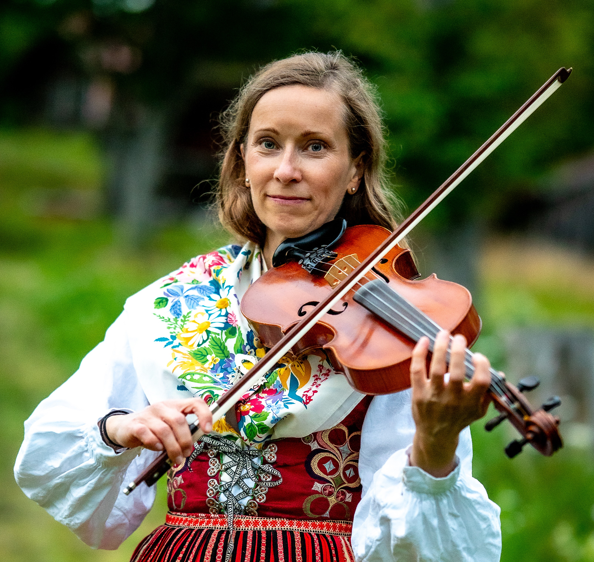

Om förbundet
Uplands Spelmansförbund – en levande tradition sedan 1945
Välkommen till USF
Uplands Spelmansförbund (USF) bildades 1945 och verkar för att bevara, utöva och sprida folkmusiken i Uppland. Med cirka 300 medlemmar är vi en av de mest aktiva spelmansförbunden i Sverige.
Förbundet anordnar regelbundna spelträffar, den årliga Oktoberstämman, och arbetar för att samla in och dokumentera uppländsk folkmusik. Vi är anslutna till Sveriges Spelmäns Riksförbund (SSR).
Vår verksamhet bygger på gemenskap och en gemensam kärlek till den uppländska folkmusiktraditionen. Oavsett om du är en erfaren spelman eller nybörjare är du varmt välkommen!
Styrelsen
Förbundets styrelse väljs på årsmötet och leder verksamheten





Mia Jones
Organisationsuppgifter
Adress: Gamla Uppsalagatan 21, 753 34 Uppsala
Org.nr: 817601-1735
Plusgiro: 384276-2
Swish: 123 603 38 56
Historik
Uplands Spelmansförbund grundades 1945 i en tid då intresset för att bevara svensk folkmusik växte starkt. Förbundet bildades för att samla spelmännen i Uppland och verka för den uppländska folkmusikens bevarande och utveckling.
Genom åren har förbundet vuxit från en liten grupp entusiaster till en organisation med ca 300 medlemmar. Verksamheten har alltid kretsat kring det gemensamma musicerandet – spelträffar, stämmor och kurser har utgjort grundstommen.
Oktoberstämman, som blivit ett av förbundets mest kända evenemang, har lockat spelmän från hela Sverige och bidragit till att göra den uppländska folkmusiken känd långt utanför landskapets gränser.
Förbundet har genom åren arbetat aktivt med att dokumentera och ge ut noter efter uppländska spelmän som Byss-Kalle och Gås-Anders, och därigenom säkrat ett rikt musikaliskt arv för framtida generationer.
Dokument
Protokoll, stadgar och verksamhetsdokument